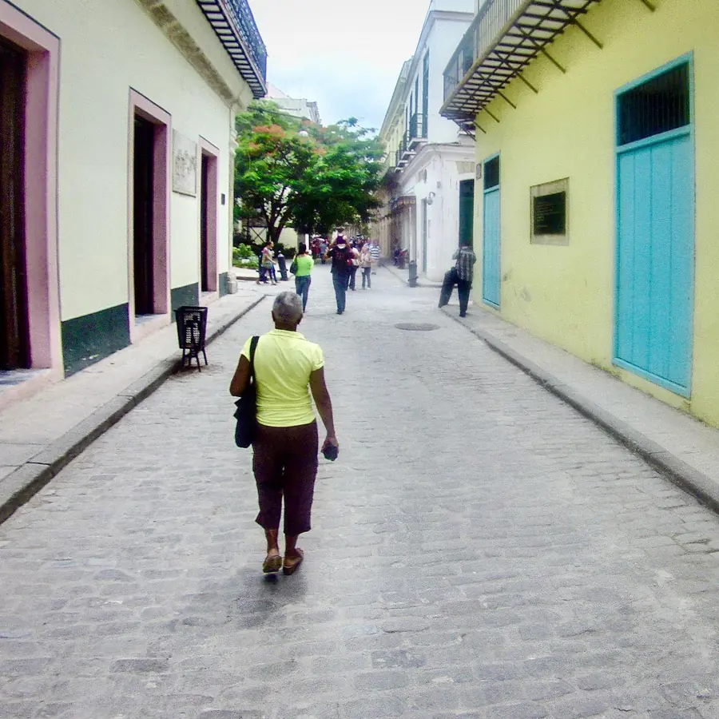

Sesión 1
Tu cámara y la luz
Entiendes cómo se forma una foto: apertura, velocidad e ISO. Conoces los modos de tu cámara o de tu celular, cómo enfocar y cómo usar la luz a tu favor.
Clases individuales con Sergio Lubezky. Con cualquier cámara, incluido tu celular. Tres sesiones a tu ritmo para empezar con bases sólidas.
Clases individuales y personalizadas con Sergio Lubezky para principiantes. Tres sesiones a tu ritmo para empezar con bases sólidas.
Compraste una cámara y casi nunca sales del modo automático. O quieres que las fotos de tu celular dejen de parecerse a todas las demás.
Si estás empezando y quieres hacerlo bien, estas clases son para ti. No necesitas saber nada de antemano.
Cada persona empieza desde un lugar distinto y quiere llegar a otro. Por eso las clases son individuales: antes de empezar platicamos de lo que quieres lograr, y las sesiones se ajustan a eso.
No hay jerarquías. Es una conversación entre dos personas que quieren hacer mejores fotos, y yo te acompaño.
Esta es la ruta base. Después de nuestra primera conversación la adapto a lo que tú quieres aprender.
Sesión 1
Entiendes cómo se forma una foto: apertura, velocidad e ISO. Conoces los modos de tu cámara o de tu celular, cómo enfocar y cómo usar la luz a tu favor.
Sesión 2
Aprendes a decidir qué entra en el encuadre y qué se queda fuera: líneas, fondos, ritmo y punto de vista. Con ejercicios para entrenar el ojo.
Sesión 3
Practicamos en la calle, contigo al mando. Después elegimos tus mejores fotos, las editamos de forma básica y definimos cómo seguir aprendiendo por tu cuenta.

Presencial en la zona de Santa Fe, Ciudad de México, o por Zoom. Tú eliges.
Soy Sergio Lubezky, fotógrafo mexicano. Mi obra se ha expuesto en México y en el extranjero, incluyendo galerías en Tokio y Nagoya, y fui de los primeros fotógrafos en el mundo en usar drones para hacer fotografía aérea.
Estudié de cerca con maestros de la fotografía mexicana como Pedro Meyer, Elsa Medina y Yvonne Venegas, y desde hace años acompaño a otros fotógrafos en México, Cuba y Colombia.
Creo que aprender fotografía no es acumular datos técnicos, sino aprender a mirar. Por eso doy clases individuales: platicamos de lo que quieres lograr y trabajamos a tu ritmo, de tú a tú.
También soy estratega, director y creador multidisciplinario; exploro cómo la percepción, los sistemas complejos y la sensibilidad humana se articulan para transformar la incertidumbre en claridad y acción. Conoce más de mi trabajo en lubezky.com.